Comparativo em fundo claro, lockup em fundo escuro e teste de redução — o tamanho em que a marca aparece num crachá, num favicon ou no canto de um documento.
Elipse preta, “u” cursivo laranja, wordmark em script itálico e “ESTACIONAMENTOS” em sans bold. Três problemas de desenho, além da resolução: o símbolo lê como “u” minúsculo (ou “w”), não como Ultra Park; o script itálico é uma fonte retrô que não conversa com o sans do descritivo; e a marca não comunica estacionamento em nenhum elemento.

Mantém tudo que tem 30 anos de reconhecimento — a elipse escura e o traço laranja — mas redesenhado em vetor: a elipse vira geometria de verdade, o traço ganha espessura constante e o gesto se resolve como um U legível, com o terminal ascendente que dava o movimento. Wordmark novo, em sans institucional, no lugar do script retrô. É a opção de menor risco: quem já conhece a marca continua reconhecendo.
U e P travados num bloco sólido. O vazado do P é um retângulo, não um oval — a contraforma vira uma vaga demarcada. Sai a elipse (que não continha nada) e entra uma forma que funciona como selo: cancela, crachá, carimbo, ícone de app. É a direção mais institucional, que é o que síndico, hospital e comissão de licitação compram.
Usa o código universal do setor — o P de estacionamento — apoiado em duas linhas de demarcação de vaga. Lê à distância e de dentro do carro, que é onde a marca de fato aparece: totem, placa, cancela. Custo: o P é genérico e sozinho não diferencia — a distinção passa a depender inteiramente do wordmark.